Mărimi caracteristice mișcării oscilatorii
Perioada – reprezintă timpul necesar efectuării unei oscilaţii complete.
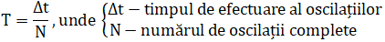[T]SI = 1s
Frecvenţa – reprezintă numărul de oscilaţii efectuate în intervalul de timp.
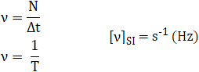Elongaţia – reprezintă distanţa faţă de poziţia de echilibru la care se află oscilatorul la un moment dat.
[y]SI = 1m
Amplitudinea – reprezintă elongaţia maximă, se notează cu A și se măsoară în metri.
A = |ymax|
Amplitudinea este, conform definiției, pozitivă întotdeauna. Ea reprezintă distanța dintre poziția de echilibru și punctul de întoarcere.
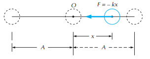Se numește mișcare oscilatorie neamortizată acea mișcare oscilatorie în care amplitudinea nu se schimbă de la o oscilație la alta.
Mișcarea oscilatorie neamortizată este un model ideal. În practică, datorită frecărilor, sistemul pierde energie și, corespunzător, amplitudinea oscilațiilor devine din ce în ce mai mică.
Ecuaţiile mișcării oscilatorii armonice
Ecuația elongației:
y = A∙sin(ωt + φ0), ymax = A
Ecuația vitezei:
v = ωA∙cos(ωt + φ0), vmax = ωA
Ecuația accelerației:
a = -ω2A∙sin(ωt + φ0),
amax = ω2A
Compunerea oscilațiilor paralele
Considerăm cazul în care punctul material execută simultan două oscilații având aceeași direcție și aceeași pulsație ω, dar amplitudini și faze inițiale diferite:
y1(t) = A1∙sin(ωt + φ01),
y2(t) = A2∙sin(ωt + φ02).
Mișcarea rezultantă va fi dată de relația:
y(t) = y1(t) + y2(t).
Notând 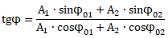 și folosind cele două expresii precedente în această relație obținem:
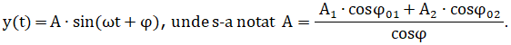Observăm că mișcarea rezultantă este tot o oscilație armonică, având aceeași direcție și aceeași pulsație ω, dar având faza inițială φ definită mai sus și având amplitudinea:
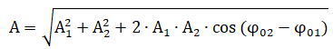 Observații:
1) ∆φ = φ02 - φ01 = 2kπ,
k ∈ {0, 1, 2, ...}, cos∆φ = cos(2kπ) = 1, atunci A = A1 + A2 (oscilații în fază).
2) ∆φ = φ02 - φ01 = (2k + 1)∙π,
k ∈ {0, 1, 2, ...}, cos∆φ = cos(2k + 1)∙π = -1, atunci A = |A2 - A1| (oscilații în opoziție de
fază).
Metoda fazorială
Considerăm cazul în care punctul material execută simultan două mișcări oscilatorii pe aceeași direcție și cu aceeași pulsație ω, dar având amplitudini și faze inițiale diferite:
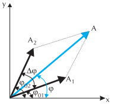y1(t) = A1∙sin(ωt + φ01),
y2(t) = A2∙sin(ωt + φ02).
Mișcarea rezultantă va fi dată de relația:
y(t) = y1(t) + y2(t).
Așa cum se vede din figură, y(t) este proiecția pe axa Oy a fazorului:
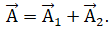Faza inițială a mișcării rezultante este dată de unghiul φ0 pe care îl face inițial fazorul rezultant 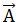cu axa Ox. Astfel, compunând fazorial oscilațiile armonice paralele, se regăsesc rezultatele obținute prin metoda analitică.
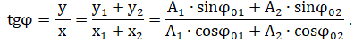Compunerea oscilațiilor perpendiculare de aceeași frecvență
Un punct material P este supus simultan acțiunii a două oscilații perpendiculare cu aceeași frecvență ca în figură.
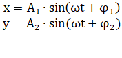 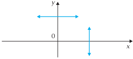 În funcție de valorile diferenței de fază Δφ = φ2 – φ1, traiectoria mișcării rezultante poate avea diferite forme:
1) dacă Δφ = 2kπ, k ∈ {0, 1, 2, ...}, atunci:
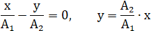
Punctul material efectuează o mișcare liniar armonică.
2) dacă Δφ = (2k + 1)∙π, k ∈ {0, 1, 2, ...}, atunci:
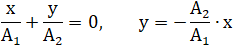
Punctul material efectuează aceeași mișcare liniar armonică, dar pe cealaltă diagonală a dreptunghiului
din figură.
3) dacă Δφ = 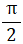, atunci mișcările oscilatorii sunt la cvadratură:
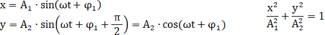
Punctul material efectuează o mișcare care urmează o
traiectorie eliptică.
Dacă A1 = A2 = A, punctul material efectuează o mișcare care urmează traiectoria unui cerc.
x2 + y2 = A2
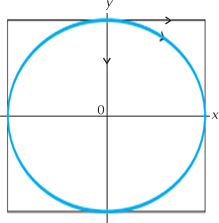4) dacă 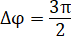, atunci mișcarea lui P va avea loc tot pe o elipsă, dar în sens contrar celui anterior.
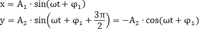
Pentru A1 = A2 = A, punctul material efectuează o mișcare care urmează traiectoria unui cerc.
Observații
1) Suprapunând două mișcări circulare de sensuri opuse, cu fazele egale în modul, se obține o oscilație armonică
liniară cu amplitudine dublă descrisă de ecuația x = 2A1∙sin(ωt + φ).
2) O oscilație armonică liniară poate fi descompusă în două mișcări circulare de aceeași frecvență, cu sensuri opuse și amplitudini pe jumătate. Această descompunere este utilă pentru legătura dintre lumina polarizată circular.
Compunerea oscilațiilor perpendiculare de frecvențe diferite
Dacă punctul material P este supus simultan acțiunii a două mișcări oscilatorii perpendiculare cu frecvențe diferite, traiectoria sa va fi complexă. Pentru un raport
rațional al frecvențelor, traiectoriile vor fi stabile, dar dependente de diferența lor de fază, figurile rezultate fiind numite figuri Lissajoux. Dacă se utilizează două axe,
orizontală și verticală, și se face raportul dintre numărul punctelor de tangență a traiectoriei cu axele se obține raportul frecvențelor oscilațiilor.
Pentru un
raport inițial al frecvențelor, punctul va descrie o curbă care va acoperi treptat o arie.